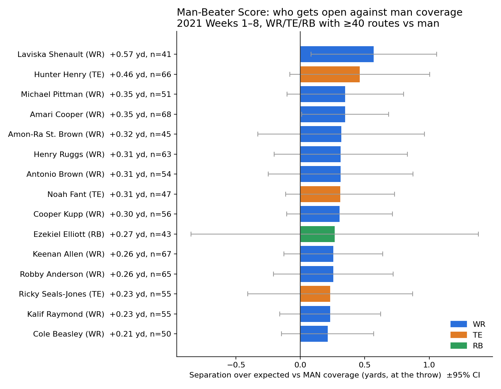
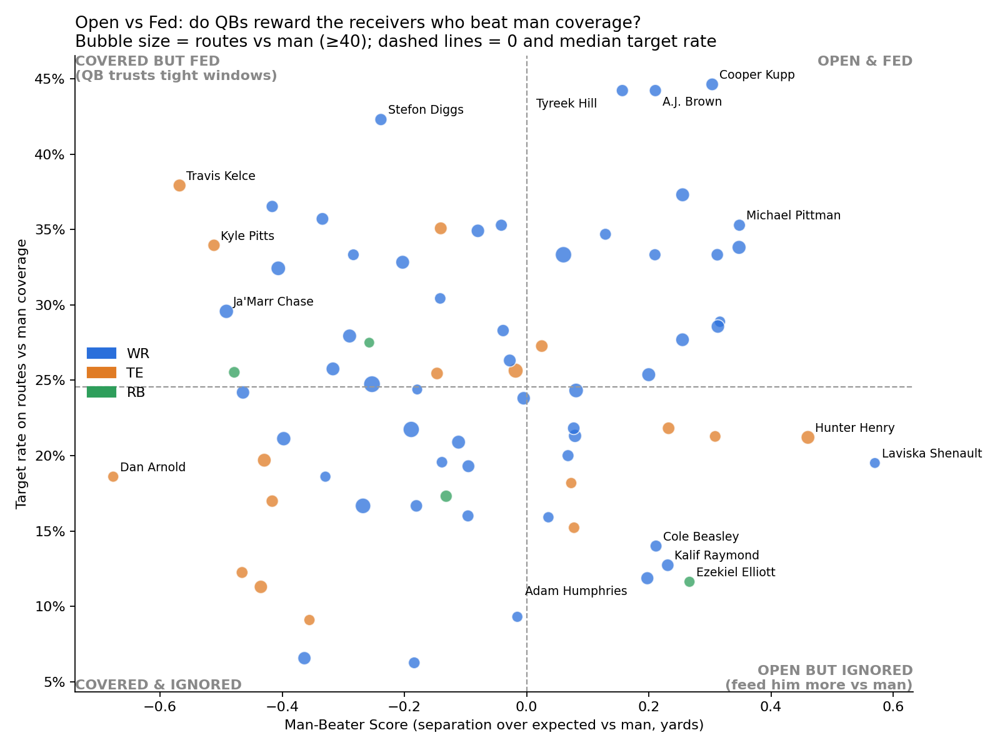
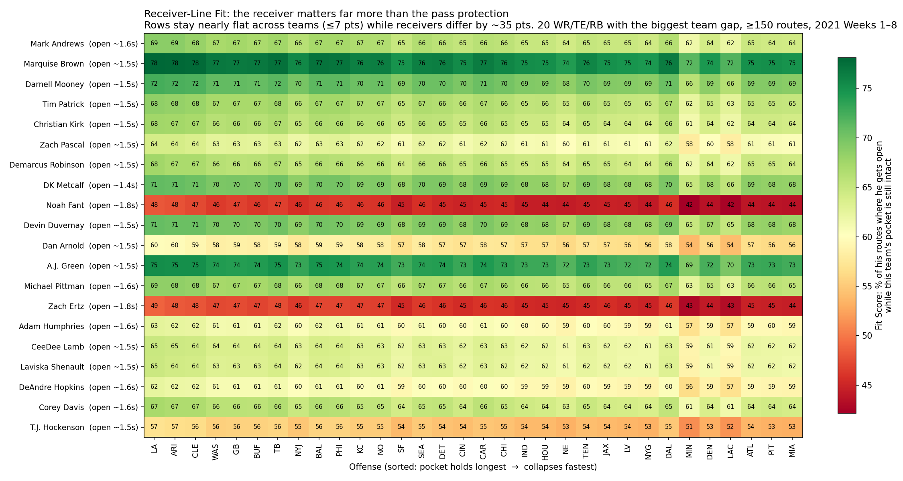

Who gets open against man coverage, and do QBs notice?
The Man-Beater Score measures how much room a wide receiver, tight end or running back has from the nearest defender at the moment of the throw against man coverage, compared with what a typical player at his position gets with the same time to throw.
Short answer: not consistently. Kalif Raymond, Cole Beasley, Adam Humphries and Ezekiel Elliott beat man coverage but were targeted on only 12 to 14% of their routes against it. Travis Kelce, Kyle Pitts and Ja'Marr Chase rank 71st to 73rd of the 74 and were still targeted 30 to 38% of the time.
Separation pays off, especially against man
When a wide receiver or tight end is 3 to 4 yards from the nearest defender at the throw against man coverage, 74% of the passes thrown to him are caught. Under 1 yard, 25% are.
Quarterbacks do look for open players: against man, the share of routes that get the ball rises from 16% under 1 yard to 34% at 4 to 6 yards, and it is higher than against zone at every distance.
Chance the QB throws to him
Chance the pass is caught when he's targeted
src/man_beater.py.Show the numbers
| Separation | Targeted, man | Targeted, zone | Caught, man | Caught, zone |
|---|---|---|---|---|
| Under 1 yd | 15.9% | 12.4% | 25.4% | 27.2% |
| 1 to 2 yd | 22.5% | 17.2% | 52.5% | 46.8% |
| 2 to 3 yd | 26.2% | 19.0% | 64.2% | 59.8% |
| 3 to 4 yd | 28.9% | 21.0% | 73.8% | 71.2% |
| 4 to 6 yd | 33.6% | 25.9% | 75.3% | 75.6% |
| 6 yd or more | 32.0% | 28.4% | 87.0% | 81.1% |
The Man-Beater leaderboard
A player's score is his average separation over expected on routes against man coverage, in yards. Zero is what a typical player at his position gets with the same time to throw.
The bars are 95% confidence intervals. Most players have 40 to 70 routes against man, so the intervals are wide and the middle of the table can reorder with a few plays. Treat a score as a scouting flag rather than a verdict.
Loading the scores from output/man_beater_scores.csv
The scores file (output/man_beater_scores.csv) didn't load, so this table can't be built. Here is the static chart from the repo instead.

The scores file loaded but lists no players. Run python src/man_beater.py to rebuild it.
| Rank | Player |
Score vs man, in yards over expected
|
Targeted vs man |
|---|
No players at this position have 40 or more routes against man coverage.
Open vs fed: do QBs reward the players who beat man?
Each mark is one player. Further right means more separation than expected against man; higher means quarterbacks threw to him on more of those routes. If quarterbacks rewarded separation, the marks would climb from left to right. They barely do: across the 74 players, the correlation between the two is 0.11.
Loading the scores from output/man_beater_scores.csv
The scores file (output/man_beater_scores.csv) didn't load, so this chart can't be drawn. Here is the static chart from the repo instead.

The scores file loaded but lists no players. Run python src/man_beater.py to rebuild it.
Open but ignored
These players beat their expected separation against man coverage but were targeted less often than the median player, who got the ball on about a quarter of his routes against man. Coaches can use the list to call plays against man. Least targeted first.
Loading the scores from output/man_beater_scores.csv
The scores file (output/man_beater_scores.csv) didn't load, so this list can't be built. The same players sit in the lower right of the repo's Open vs Fed chart above.
The scores file loaded but lists no players. Run python src/man_beater.py to rebuild it.
No player beat his expected separation while being targeted less often than the median.
Rule from src/man_beater.py: Man-Beater Score above 0 and target rate against man below the median.
Bonus: does a receiver need a good offensive line?
A receiver who gets open late should be wasted behind a line that collapses fast. To test that, we measured how long each team's pocket stays intact (until a pass rusher gets within 2 yards of the quarterback) and when each receiver first gets open (3 yards from every coverage defender, 3 yards past the line of scrimmage, at least 0.5 s after the snap). His Fit Score with a team is the share of his routes on which he gets open while that team's pocket would still be intact.
Fit barely depends on the line. Receivers get open early, at a median of 1.6 s after the snap, before most pockets collapse. Team averages sit between 49% and 54%, receivers range from 5% to 76%, and no receiver's score moves more than about 7 points between his best and worst line.
Limits: "open" uses fixed distance thresholds, open time also reflects route design, and a new team's quarterback and play-calling would change things.
Loading the fit scores from output/fit_scores.csv
The fit scores file (output/fit_scores.csv) didn't load, so this chart can't be drawn. Here is the static heatmap from the repo instead.

The fit scores file loaded but lists no receivers. Run python src/fit_score.py to rebuild it.
Each bar is one receiver, from his worst-fitting line to his best
How we measured it
- Positions come from the tracking frame of the first
pass_forwardevent. - Defenders are the players with the PFF role
Coverage. - The targeted receiver is parsed from the play description. We dropped the 7% of throws we couldn't match.
- Expected separation is a linear fit on time to throw within each position and coverage group.
What it can't tell you
- Tracking ends about 0.5 s after the throw, so we can't measure separation at the catch.
- Samples are small: 40 to 97 routes against man per player, wide confidence intervals, and a split-half reliability of r = 0.27.
- Target rate isn't adjusted for position or for the other options on the play.
Run it yourself
The full pipeline takes about 15 seconds.
git clone --depth 1 https://github.com/ThompsonJamesBliss/nfl-big-data-bowl-regional-event-data.git data-src
pip install -r requirements.txt
python src/build_features.py # -> output/route_separation.csv
python src/man_beater.py # -> scores CSV + 3 charts
python src/fit_score.py # -> fit scores + heatmap (bonus)src/explore.py and src/traps.py are the data checks we ran first: join keys, coverage labels, duplicate snap and throw events, where tracking ends, and target parsing.
- Scores for all 74 playersCSV, 7 KB
- Every route with its separation at the throwCSV, 2.3 MB
- Fit Scores, 99 receivers by 32 teamsCSV, 153 KB